Штучний інтелект (ШІ, англ. Artificial Intelligence, AI) — це галузь інформатики, що створює комп'ютерні системи, здатні виконувати завдання, які зазвичай потребують людського інтелекту: розпізнавати мову та зображення, перекладати тексти, ухвалювати рішення та навчатися на власному досвіді.
Сам термін запропонував американський учений Джон Маккарті, готуючи літній семінар у Дартмутському коледжі, що відбувся у 1956 році. Саме цю подію вважають офіційною датою народження ШІ як наукового напряму.
Розрізняють слабкий (вузький) ШІ, який виконує одне конкретне завдання,
і сильний (загальний) ШІ, що мав би мислити на рівні людини в будь-якій сфері.
Усі сучасні системи — від голосових помічників до чат-ботів — поки що належать до вузького ШІ.
Колись популярну думку «комп'ютер ніколи не обіграє людину в шахи»
спростувала програма Deep Blue ще у 1997 році.
Основою більшості сучасних систем ШІ є штучні нейронні мережі. Кожен нейрон отримує вхідні сигнали x1, x2, …, xn, множить їх на ваги w1, w2, …, wn, додає зміщення b і пропускає суму через функцію активації f:
y = f(w1x1 + w2x2 + … + wnxn + b)
Великі мовні моделі містять сотні мільярдів таких параметрів — понад 1011. Для їх навчання потрібні тисячі графічних процесорів і величезні обсяги текстів. (Для порівняння: мозок людини має близько 8,6·1010 нейронів.)
Ось як можна описати один нейрон мовою Python (функція neuron):
import math
def neuron(x, w, b):
s = sum(xi * wi for xi, wi in zip(x, w)) + b
return 1 / (1 + math.exp(-s)) # сигмоїда
print(neuron([1.0, 0.5], [0.4, -0.2], 0.1))
Щоб запустити програму, наберіть у терміналі python neuron.py і натисніть Enter. Програма виведе приблизно таке: 0.598687660112452
Функція math.exp обчислює експоненту, а змінна s — зважену суму входів.
У статті «Обчислювальні машини та розум» (1950) Алан Тюрінг поставив питання:
«Пропоную розглянути питання: чи можуть машини мислити?»
Він запропонував «гру в імітацію»: якщо людина-суддя, листуючись із машиною та людиною, не може надійно відрізнити, хто з них хто, — машину можна вважати «мислячою».
Сторінку створено в межах лабораторної роботи № 4